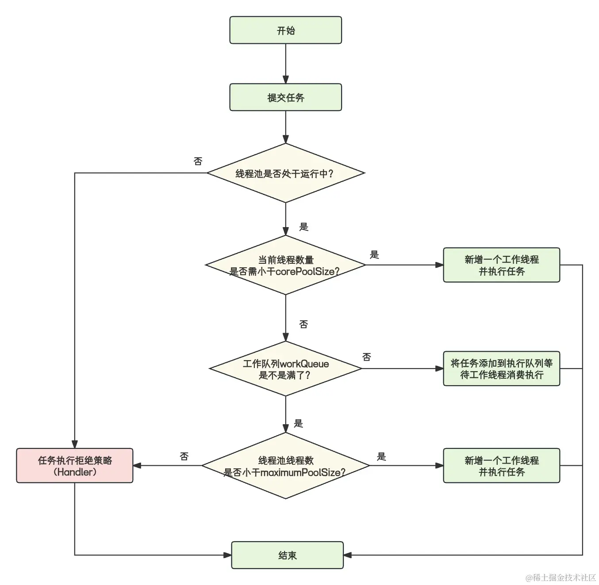
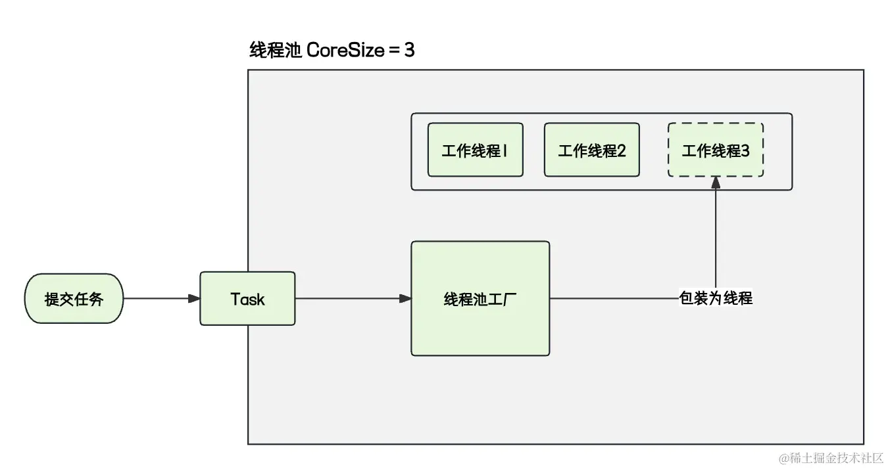

- 01 多线程初阶：解谜多线程世界.md.html
- 02 线程池掌故：管理并发的秘籍.md.html
- 03 锁的奥秘：synchronized 的秘密.md.html
- 04 锁的奥秘：Lock 接口的秘密.md.html
- 05 控制并发流程，并发的巧妙编织.md.html
- 06 ThreadLocal 之珍宝：线程的隐秘宝库.md.html
- 07 CAS：比肩而立的原子魔法.md.html
- 08 容器的魔力：并发世界的宝库.md.html
- 09 结果如何？线程的秘密告白.md.html
- 10 AQS：保证并发安全的终极奥秘（上）.md.html
- 11 AQS：保证并发安全的终极奥秘（中）.md.html
- 12 AQS：保证并发安全的终极奥秘（下）.md.html
- 捐赠
02 线程池掌故：管理并发的秘籍
在前一章，我们学习了线程的基本应用。简而言之，线程的主要目的是充分利用 CPU 的计算能力，以提高服务处理和响应速度。然而，有一句古话说：“过犹不及”，这引发了一个问题：是否线程的数量越多越好呢？
在上一章学习中，我们深入了解了线程的生命周期。线程只有在获得 CPU 时间片时才处于“Running”状态。当时间片用尽时，操作系统必须保存当前线程的执行上下文，包括寄存器状态、程序计数器、栈指针等信息。这是为了确保下一次该线程再次获得 CPU 时间片时能够恢复到之前的执行状态。
现在开发面试张嘴就是并发数高达几十万，假设在这种场景下，我们不加以控制地创建大量线程，将会给操作系统带来巨大的压力，导致线程切换频繁或者内存占用到极限等。因此，需要谨慎控制线程的创建。
在本节课，我们将会着重介绍线程池的使用，将我们上一章节学习的线程集中起来管理，从而使这些散列的线程相互之间协同配合，更好地压榨 CPU 的性能。
一、线程池是什么
一个服务器的硬件资源总是有限的，但是对于线程执行任务的数量是不可以预测的，如果不加以管控，那么系统会在有限的服务器资源上无限制地创建线程，从而造成诸如 OOM 等各种不可预测的问题。
既然无限制的创建线程会出现问题，那么我们让其变得有限不就能够解决问题吗？
在常规的开发场景下，一个线程执行完分配的任务后就会处于空闲状态，继而被 JVM 回收掉。那么假设我们创建有限个线程循环不停的执行任务，任务执行完了，就再获取一个新任务进行执行。这样既解决了无限创建的问题，又解决了线程频繁创建销毁的开销！
比如，我们创建了 10 个持续存在的线程，这些线程会不断执行用户提交的任务，这是否足以解决线程数量过多的问题呢？这就引出了线程池的概念。
线程池是一种基于池化思想的线程管理工具，它在池内维护多个长期存在的“常驻线程”，通过重复使用这些“常驻线程”来避免线程的反复创建和销毁。
当任务到达时，无需每次都创建新线程，线程池能够直接执行任务。此外，线程池具备可扩展性，允许开发人员根据需求添加更多功能，例如利用线程池钩子来实现特定的功能。线程池还提供了一系列可调整的参数，使我们能够根据业务需求进行线程池的调优和监控等操作。
二、线程池的使用
在理解线程池的过程中，如果能够充分理解线程池参数的用法和意义，那么基本上你就已经掌握了线程池的大部分用法。
下面我将会围绕“线程池的参数”和“线程池常用 API”来进行重点介绍，以帮助你掌握线程池的基础使用方法。
1. 线程池的核心参数
在下面的表格中，我列举了使用线程池过程中全部的参数，后续我也将对表格中的每一个参数都会进行一个详细的说明，因为这些参数的使用和意义对于你更好地掌握线程池有重要的意义，并且也是高频面试点，需要着重学习。
| 参数名称 | 类型 | 简要介绍 |
|---|---|---|
| corePoolSize | int | 核心线程数 |
| maximumPoolSize | int | 最大线程数 |
| keepAliveTime | long | 空闲时间 |
| unit | TimeUnit | 空闲时间的时间单位 |
| workQueue | BlockingQueue | 任务队列 |
| threadFactory | ThreadFactory | 线程工厂 |
| handler | RejectedExecutionHandler | 拒绝策略 |
参数的详细介绍：
- corePoolSize：线程池核心线程的数量。核心线程就是如果不做特殊设置就永远不会停止的线程，即使没有任务执行了，核心线程也不会被回收掉。线程池总是会保证最少
corePoolSize个线程存在。 - maximumPoolSize：线程池的最大线程数量，它表示线程池的最大线程数限制。当向线程池中提交的任务数量达到一定的条件后（后面会详细说），会在核心线程数量之外再次开启新的线程执行任务。不同于核心线程的是，当所有任务处理完毕后，大于
corePoolSize的这部分线程在空闲一段时间后，JVM 会将其回收掉。它是线程池在面对突发大任务量袭击下的一种 折中手段，先临时开辟不大于maximumPoolSize个数量的线程，先把这部分突增的任务处理掉，然后再把这些多余的线程回收掉。 - keepAliveTime：定义的空闲时间，当任务被消耗完毕后，高于
corePoolSize的这部分线程在空闲多长时间会被关闭回收掉。 - unit：空闲的时间单位，可以指定为秒、分钟、小时等单位信息，与
keepAliveTime共同使用，共同定义空闲时间。 - workQueue：任务队列，它是一个队列结构的容器。正常情况下，任务被提交到线程池之后，会立即被核心线程所执行，但是当核心线程都处于忙碌状态的时候，没有核心线程去执行这个任务，那么这个任务会被暂时提交到任务队列中等待核心线程空闲下来再去执行！当任务队列被放满了，比如一个长度为 10 的队列，里面已经放了 10 个任务，那么第 11 个任务就会触发 maximumPoolSize 线程的执行（这一点也会在后续详细说明）。
- threadFactory：线程工厂，主要用于控制线程池以何种方式去产生一个新线程，比如我们在上一章节学习的去设置线程池中产生线程的名字、优先级、是不是守护线程等这些信息。
- handler：拒绝策略，这个参数就是线程池在处理突发大量任务的最后的 兜底手段。当 corePoolSize、maximumPoolSize、workQueue 全部都被任务填满了之后，线程池会认为已经无力再执行后续提交的任务，此时对于后续的任务会触发拒绝策略来拒绝任务（有关于拒绝策略的知识点会在后续详细说明）。
需要额外说明：这里的核心线程与非核心线程只是一个称呼，在 ThreadPoolExecutor 内部，只要小于核心线程数的线程统称为核心线程，大于核心线程数的统称为非核心线程，不分先后，不一定先创建的就是核心线程、后创建的就是非核心线程。
举个例子，当 coreSize 为 1、maxSize 为 3、队列长度为 0 的时候，提交三个任务，A、B、C 三个线程分别去执行，A 并不一定是核心线程，当 A 执行完毕后，B、C 还在运行中时，此时 A 就会在到达超时时间之后被回收掉， B 和 C 中有一个线程就会被当作核心线程使用。
（1）线程池如何安置任务？
我们在上文了解了线程池中每一个参数的大致含义之后，我们还需要了解线程池中这些参数在配合之下到底产生了何种奇妙的化学反应！
当我们向线程池中提交了大量的任务后，提交的任务会经历以下的历程：
- 任务开始提交后，当线程池中的线程数小于 corePoolSize 的时候，那么线程池会立即创建一个新的线程去执行这个任务，因此这个任务会被立即运行。
- 随着任务数量的提升，当线程池中的线程数大于等于 corePoolSize 且小于 maximumPoolSize 的时候，线程池会将这些任务暂时存放在 workQueue 中等待核心线程运行完毕后，来消费这些等待的任务。
- 随着任务数量还在不停地上涨，任务队列（workQueue）也放不下了，任务已经被放满，此时会开始继续新建线程去消费任务队列的任务，直到当前线程池中存活的线程数量等于 maximumPoolSize 为止。
- 此时，如果系统还在不停地提交任务，workQueue 被放满了，线程池中存活的线程数量也等于 maximumPoolSize 了，那么线程池会认为它执行不了这么多任务。为了避免出现不可预测的问题，那么超出线程池极限的这部分任务，会被线程池调用拒绝策略（Handler）来拒绝执行。
- 终于，一波任务高峰过去了，系统终于不再提交新的任务，此时 maximumPoolSize 个线程会赶紧将手头的任务执行完毕，然后开始协助消费 workQueue 中等待的任务，直至将等待队列中的任务消费完毕。此时 maximumPoolSize 个线程开始没活干了，就开始闲着，当空闲时间超过了 keepAliveTime 与 unit 所规定的空闲时间，线程池就开始回收这些空闲的线程，直至线程池中存活的线程数量等于 corePoolSize 为止。
我们使用一张示意图来解释这个过程：

（2）keepAliveTime 与 unit
我们上面基本描述了 keepAliveTime 与 unit 所存在的意义：它规定了当非核心线程在规定的时间内，没有执行任务，就证明这个非核心线程是冗余线程，此时就会将非核心线程关闭。
但是我们上面也重点说明了，在不做特殊设置的情况下，线程池无论如何回收都会保证至少存在 corePoolSize 个线程，那么肯定就存在特殊设置：
threadPoolExecutor.allowCoreThreadTimeOut(true);
上述代码就是指定是否回收核心线程，在设置了该项参数之后 ，当核心线程空闲之后也会被回收，如果线程池一个任务也没有，那么在空闲一段时间之后，线程池中线程会被全部回收，等有任务了再去新建线程。
（3）workQueue 的常用类型
我们在上文说到，所谓的工作队列事实上就是一个“等待任务”的临时存放的容器，这个容器 JDK 官方规定必须是一个阻塞的队列。
JDK 中为我们提供了很多的阻塞队列，在线程池中常用的队列有以下四种。
- java.util.concurrent.SynchronousQueue：该队列没有容量，只是做一个简单的交换。因为没有容量，线程池内的线程数可以很轻松地达到 maximumPoolSize 设置的容量。
- java.util.concurrent.LinkedBlockingQueue：无界队列，所谓无界队列的意思就是它没有边界，大小近乎无限，队列容量为
Integer.MAX_VALUE。使用这种队列的时候需要特别注意，因为它的容量近乎无限，所以线程池参数maximumPoolSize是不生效的，拒绝策略也是失效的，因为队列永远也装不满；所以在任务的执行速度低于任务产生的情况下，众多的任务可能被无限地堆积在无界队列中，最终导致 OOM 的发生。 - java.util.concurrent.ArrayBlockingQueue：有界队列，它的概念与无界队列恰恰相反，它可以设置一个长度，这种情况下
maximumPoolSize和拒绝策略就有了意义，当队列被塞满后就会执行我们分析的逻辑。 - java.util.concurrent.ScheduledThreadPoolExecutor.DelayedWorkQueue：延时队列，它可以写入一个任务并定义一个时间，这个任务只有在达到超时时间后才能被消费，这种队列适用于定时线程池，后面会详细分析。
不同的队列在线程池中有不同的使用场景。比如，我就是想要线程池达到上文介绍的那种弹性扩缩容的能力，那么我们就使用 ArrayBlockingQueue 这种有界队列，当任务数量达到队列最大数量之后，开始使用 maximumPoolSize 参数进行工作线程数量的增加，以达到加快任务执行速度的目的。
如果我们希望，线程必须以一个固定的线程容量执行任务，暂时没有机会执行的任务就放到队列中，队列不做长度限制，有多少任务放多少任务，那么就推荐使用类似于 LinkedBlockingQueue 这种无界队列。但是使用无界队列就必须要注意一件事，因为队列长度是无限的，所以无论有多少任务处于等待状态，都不会触发拒绝策略，只会在队列中堆积，从而造成 OOM。
（4）handler 的意义
正如我们上面举的例子，当存在大量的任务，而且线程池的工作队列使用的又是一个有界队列，当队列满了而且线程池的存活线程数量也达到了最大线程池规定的数量，此时任务就会被线程池交给拒绝策略去处理。
拒绝策略存在的意义就是当线程池实在是忙不过来的时候，来帮助线程池处理这些任务，至于处理的方式是直接丢弃亦或者是直接报错，由我们给定的处理器决定。
JDK 官方为我们默认提供了 4 种拒绝策略，我们简单说明一下每一种拒绝策略的特点。
- java.util.concurrent.ThreadPoolExecutor.DiscardOldestPolicy：当满足拒绝策略时，丢弃任务队列中旧的任务，将新任务添加到任务队列。
- java.util.concurrent.ThreadPoolExecutor.AbortPolicy：当满足拒绝策略时，提交的任务会直接抛出 RejectedExecutionException 异常。
- java.util.concurrent.ThreadPoolExecutor.CallerRunsPolicy：当满足拒绝策略时，被拒绝的任务会交由提交任务的那个线程去执行，谁提交的谁执行。
- java.util.concurrent.ThreadPoolExecutor.DiscardPolicy：当满足拒绝策略时，新提交的任务会被静默丢弃，不会出现任何异常。
以上不同的拒绝策略没有好坏之分，比如一些日志记录或统计任务，这类任务的丢失不会对系统产生什么影响，那么我们可以直接使用 DiscardPolicy，当线程池处理不了的时候直接把任务丢弃掉！当我们丢弃任务的时候，如果需要告知调用者，那么就使用 AbortPolicy，它会在丢弃任务之后再向调用者抛一个异常！
当我们的系统对于某一个任务特别敏感的时候，就是即使线程池处理不了了，那么这个任务也必须执行，此时就可以使用 CallerRunsPolicy，它会直接让主线程来执行。比如，A 线程向线程池提交任务，结果线程池处理不了了，那么这个拒绝策略就会直接让 A 线程自己去执行这个任务！从而保证任务一定能够被执行。但是注意，这种拒绝策略会导致调用者线程阻塞。
使用者也可以自定义拒绝策略，比如我们在线程池满了之后，输出一行丢弃的日志之后将任务丢弃，只需要实现 java.util.concurrent.RejectedExecutionHandler 接口即可，具体的定义方式如下：
public class MyPolicy implements RejectedExecutionHandler {
@Override
public void rejectedExecution(Runnable r, ThreadPoolExecutor executor) {
System.out.println( "线程池已经达到最大极限，该任务被丢弃..." );
}
}
（5）threadFactory
我们在上文中描述，当满足一定条件的时候，对于新任务，线程池会创建一个工作线程来执行任务，创建工作线程这一步就是由线程池工厂来负责。JDK 默认使用DefaultThreadFactory作为线程池的线程池工厂，默认线程池创建的线程都属于同一个线程组，拥有同样的优先级，并且都不是守护线程。线程工厂主要规定了线程池如何创建线程。
线程池对于线程工厂的使用，我们可以使用下图来简单了解一下：

开发者也可以定制自己的线程池工厂，来定制化产生线程的方式。假设我们要求线程池创建的线程的线程名称必须是以 test-Thread 作为开头的话，我们就可以这样来定义线程工厂：
public class MyThreadFactory implements ThreadFactory {
/**
* 线程名称递增id
*/
private final static AtomicLong IDX = new AtomicLong();
@Override
public Thread newThread(Runnable r) {
//将任务包装为线程
Thread thread = new Thread(r);
//设置线程名称
thread.setName( "test-Thread-" +IDX.getAndIncrement());
return thread;
}
}
2. JDK 默认的线程池创建方式
在介绍自定义线程池之前，我们先学习一下 JDK 默认的几种线程池的创建方式，以及为什么在阿里巴巴最新的编码规范中明确声明不建议使用 JDK 默认的创建方式。
（1）定长线程池
定长线程池的意义是事先就规定好了线程池的大小，它的corePoolSize和maximumPoolSize数量是相等的，且线程队列使用的是无界队列。那么根据我们上文的分析，当corePoolSize=maximumPoolSize，而且队列为无界队列的时候，永远也不会触发拒绝策略，而且所有来不及执行的任务都会堆积在任务队列中。
它的使用方式如下：
ExecutorService fixedThreadPool = Executors.newFixedThreadPool(10);
缺陷：因为任务只会无限制地堆积在任务队列中，当任务产生速度过快的时候，线程池无法自行扩展，而且也无法执行拒绝策略，那么任务将会全部堆积在无界队列中，进而产生 OOM 问题。
（2）简单线程池
它的配置和定长线程池几乎一致，唯一不同的是它的corePoolSize和maximumPoolSize都是 1，证明它最多只能同时执行 1 个任务，多余的任务会被缓存在无界队列中等待消费，缺陷与定长线程池一致。
它的具体使用方式如下：
ExecutorService singleThreadExecutor = Executors.newSingleThreadExecutor();
（3）缓存线程池
缓冲线程池是一个特殊的线程池，它的特性是来多少任务，我开启多少线程，当任务执行完毕后，线程空闲一定时间后会被回收。
ExecutorService cachedThreadPool = Executors.newCachedThreadPool();
我们进入到源码分析它的线程池参数，它的corePoolSize为 0，但是maximumPoolSize却为Integer.MAX_VALUE，使用的队列是SynchronousQueue，我们在 workQueue 常用类型中介绍过，这个队列的容量为 0，所以根据上文的分析，我们能得到以下的结论：
- 当任务到达之后，因为
corePoolSize的大小为 0，此时线程池会尝试将任务放置到任务队列中。 - 任务在入队过程中发现，此时任务队列最大长度为 0，那么此时线程池会尝试使用
maximumPoolSize参数来创建线程。 - 因为
maximumPoolSize的大小为Integer.MAX_VALUE，就证明线程池的最大线程数量为无限大，所以根据分析，缓冲线程池能够无限制地开启任意多个线程，而不受限制。 - 该线程池的空闲线程时间为 60 秒，当线程空闲时间超过 60 秒的时候，该线程会被回收。
缺陷：极限情况下会导致线程无限制地创建线程，最终将系统资源全部消耗。
（4）定时线程池
这个线程池就很特殊了，它属于 ThreadPoolExecutor 的衍生子类，作用是可以以一个固定的时间去不断地执行任务。
这个线程池也是一个特殊的线程池，与我们上面介绍的线程池不同的是，这个线程池是带有定时功能的线程池，它可以将一个任务延时一定的时间后执行，也可以让任务以一个固定的频率去执行。具体使用方式如下：
ScheduledExecutorService scheduledExecutorService = Executors.newScheduledThreadPool(10);
对于定时线程池，我们在开发中常用的有三种使用方式。
- 设置一个定时，当任务到达这个定时之后就会执行，比如我们下面的代码，定时 1 秒后执行，而且只执行一次：
scheduledExecutorService.schedule(() -> System.out.println("定时任务执行"), 1, TimeUnit.SECONDS);
- 将任务以一个固定的频率去执行，比如我们有这样一个功能，每隔 5 秒扫描一次数据库的邮件表，将未发送的邮件发送出去并更改数据状态为已经发送。这个功能就能够使用下面的这种方式来进行开发。
它的使用方式具体如下：
scheduledExecutorService.scheduleWithFixedDelay(() -> System.out.println("扫描数据库邮件表，并发送邮件"), 10, 5, TimeUnit.SECONDS);
我们可以看到它的定义，存在 4 个参数：
- 参数 1：实际要执行的任务；
- 参数 2：初始延时，也就是当程序启动后，第一次执行在程序启动后的那个时间点执行，如代码中的定义，会在程序启动成功后的第 10 秒执行任务；
- 参数 3：任务运行的间隔时间，如上述代码定义，任务每隔 5 秒运行一次；
- 参数 4：描述前面给定的时间单位。
这里注意，任务的执行间隔是相对于上一次任务的完成时间，也就是说当上一个任务执行完毕之后，下一次任务的计时才会开始。假设我们的任务执行需要 5 秒，从 10 点开始执行，每 5 分钟执行一次，那么第一次执行是 10:05:00执行，10:05:05 执行完毕, 那么下一次执行时间是10:10:05。
- 第三种使用方式与第二种一致，也是以一个固定的频率去执行任务，该方法会以固定的时间间隔执行任务，但与上面不同的是，这种使用方式无论前一个任务是否已完成，下一个任务都会开始运行。任务的执行间隔是相对于上一次任务开始执行的时间。如果任务的执行时间较长，可能会导致任务之间的间隔时间小于指定的时间间隔。
它的使用方式具体如下：
scheduledExecutorService.scheduleAtFixedRate(() -> System.out.println("定时任务执行"), 1, 1, TimeUnit.SECONDS);
与第二种使用方式不同的是它的执行频率，它下一次的任务开始时间不再是以上一次任务的结束时间开始计时的，而是从上一次任务的开始时间开始计时。
下面我举个例子，你对照第二种使用方式的例子，就能够理解它们之间的区别：假设我们的任务执行需要 5 秒，从 10 点开始执行，每 5 分钟执行一次，那么第一次执行是 10:05:00执行，10:05:05 执行完毕，但是与第二种方式不同的是，它下一次执行时间是10:10:00。
这种使用方式适用于对执行时间敏感的任务，比如我们就是需要每隔一个小时执行任务，无论上一个任务是否执行完毕，下一个任务都要准时触发的场景。
3. 自定义线程池
我们上文详细分析了对于 JDK 自带的默认线程池的使用方式和缺陷，使用系统自带的线程池固然简单，但是我们前面仔细分析了线程池参数的意义、使用系统自带的线程池定义方式，那么开发人员对于线程池的参数是无法掌控的，我们所使用的参数全部都变成系统预设的，所以在开发中，我们使用最多的还是自定义线程池。
我们简单尝试定一个线程池：
ThreadPoolExecutor threadPoolExecutor = new ThreadPoolExecutor(1, 2, 60, TimeUnit.SECONDS, new ArrayBlockingQueue<>(10), new ThreadFactory() {
@Override
public Thread newThread(Runnable r) {
return new Thread(r);
}
}, new ThreadPoolExecutor.AbortPolicy());
上述自定义线程池中：
- corePoolSize=1
- maximumPoolSize=2
- keepAliveTime=60
- unit=秒
- workQueue=有界队列，长度为 10
- threadFactory 使用的是自定义的线程池工厂
- handler 使用的是 AbortPolicy，当任务被拒绝后，抛出异常后丢弃任务
根据前面的学习，我们上述定义的线程池的核心大小为 1，最大长度为 2，空闲时间为 60 秒，有界队列长度为 10，可以根据我们的所学来描述线程池提交任务的过程。
有了上面线程池参数，我们可以尝试将线程池提交任务的过程使用文字推算一遍：
- 提交任务 A，线程池会使用线程工厂创建一个核心线程来执行任务 A。
- 提交任务 B，此时线程数大于等于 1，那么任务 B 被存放到 ArrayBlockingQueue 中。
- 再次提交 9 个 B 任务，此时 ArrayBlockingQueue 中存在 10 个任务，被塞满。
- 提交任务 C，此时 ArrayBlockingQueue 被放满，且线程数小于 2，则再次开启一个新的非核心线程来执行任务。
- 提交任务 D，此时 ArrayBlockingQueue 被放满，且线程数等于 2，执行拒绝策略 AbortPolicy，直接抛出异常。
可以推测到，线程池接收任务的过程与我们上文分析的流程是一致的，它会先使用 corePoolSize 规定的数量创建核心线程，然后使用 workQueue，队列也被塞满后，就会使用 maximumPoolSize 规定的数目再次启动额外的线程处理任务！当上述三种方式都无法接收新任务的时候，任务就会被推送到拒绝策略执行！
4. 线程池的主要 API
至此，我们学习了线程池如何创建，以及线程池的每一个参数的具体含义，下面我们将会详细学习开发中线程池常用的 API。
（1）提交任务
线程池中提交任务的方式主要有两种，一种是没有任何返回值和异常的提交方式，一种是提交任务后，可以获取任务的返回值、执行异常的提交方式。
execute 方法
execute 方式是一种无返回结果的提交方式。
如果我们希望线程池仅仅只异步执行一个任务，不需要这个任务的任何返回值，那么我们可以通过下面的方式定义：
public class ThreadPoolNotResultSubmitTest {
/**
* 使用默认的线程工厂
*/
private final static ThreadPoolExecutor THREAD_POOL_EXECUTOR = new ThreadPoolExecutor(1, 2, 60, TimeUnit.SECONDS, new ArrayBlockingQueue<>(10), Executors.defaultThreadFactory(), new ThreadPoolExecutor.AbortPolicy());
public static void main(String[] args) {
THREAD_POOL_EXECUTOR.execute(() ->{
System.out.println("线程池执行任务，线程名为: " + Thread.currentThread().getName());
});
}
}
submit 方法
submit 方式是一种可以通过 Future 获取任务的执行结果和执行异常的方式。
该种方式是一个有结果的执行方式。通过 submit 提交任务，会返回一个 Future 对象，通过 Future 对象，我们可以获取到最终任务执行结果（有关 Future 的使用方式将会在后面的章节详细介绍，这里简单了解即可）。
public class ThreadPoolResultSubmitTest {
/**
* 使用默认的线程工厂
*/
private final static ThreadPoolExecutor THREAD_POOL_EXECUTOR = new ThreadPoolExecutor(1, 2, 60, TimeUnit.SECONDS, new ArrayBlockingQueue<>(10), Executors.defaultThreadFactory(), new ThreadPoolExecutor.AbortPolicy());
public static void main(String[] args) throws ExecutionException, InterruptedException {
Future<String> future = THREAD_POOL_EXECUTOR.submit(() -> {
System.out.println("我执行了");
return String.format("我是执行结果，我被线程【%s】执行", Thread.currentThread().getName());
});
System.out.println("线程执行结果: "+future.get());
}
}
在上述的代码中，我们通过 submit 提交了一个异步任务，任务提交后会返回一个 Future，我们基于 Future 可以获取任务的返回结果和异常信息。
注意，使用线程池提交一个任务后不代表被提交的任务会立即执行，它仅仅是被提交到了线程池中，至于何时执行该任务需要根据我们上文学习到的线程池参数的应用来判定。
（2）停止线程池
JDK 官方为我们提供了两种停止线程池的方式，一种是“优雅的关闭”，一种是“暴力的终止”，下面我们将对两种停止方式做一个具体的介绍。
shutdown 关闭线程池
这个方法特别类似于我们上一节学习线程停止时候的interrupt，它是一个“优雅的绅士”，并不会立即把线程池停掉，而是等待线程池内的所有任务全部执行完毕后，才会关闭线程池。
需要注意的是，发起 shutdown 的信号后，线程池会停止接收新任务。此时如果再调用 shutdown 后再去提交任务，线程池会将任务直接推送到拒绝策略去执行。简单说，任务停止后是不允许提交新任务的。
public class StopThreadPoolTest {
/**
* 使用默认的线程工厂
*/
private final static ThreadPoolExecutor THREAD_POOL_EXECUTOR = new ThreadPoolExecutor(1, 3, 60, TimeUnit.SECONDS, new ArrayBlockingQueue<>(10), Executors.defaultThreadFactory(), new ThreadPoolExecutor.AbortPolicy());
public static void main(String[] args) throws InterruptedException {
THREAD_POOL_EXECUTOR.execute(() ->{
try {
TimeUnit.SECONDS.sleep(3);
System.out.println("线程池执行任务，线程名为: " + Thread.currentThread().getName());
} catch (InterruptedException e) {
e.printStackTrace();
}
});
THREAD_POOL_EXECUTOR.execute(() ->{
try {
TimeUnit.SECONDS.sleep(10);
System.out.println("线程池执行任务，线程名为: " + Thread.currentThread().getName());
} catch (InterruptedException e) {
e.printStackTrace();
}
});
THREAD_POOL_EXECUTOR.shutdown();
TimeUnit.SECONDS.sleep(1);
//线程池是否被停止 true
System.out.println(THREAD_POOL_EXECUTOR.isShutdown());
//线程池是否处于终止中的状态 true
System.out.println(THREAD_POOL_EXECUTOR.isTerminating());
//线程池是否处于终止状态 false
System.out.println(THREAD_POOL_EXECUTOR.isTerminated());
}
}
上述代码就是调用 shutdown 方法停止线程池的方式。可以看到，线程池中存在两个任务，都模拟了业务执行所消耗的时间 10 秒，任务执行过程中，我们调用了 shutdown 方法，此时因为任务还在执行过程中，线程池不会立即关闭，而是等待任务执行完毕后，才会正式停止线程。
我们在代码里面调用了几个判断状态的方式，下面将对这三种方法进行简要说明。
- isShutdown：返回线程池是否处于关闭状态，该方法只要调用了关闭线程池的 API，就会返回为 true，当 isShutdown 返回为 true 的时候，线程池不再接收新的任务。
- isTerminating：返回线程池是否处于终止中的状态，终止代表线程池彻底完成了关闭状态，如上述代码，因为线程池还在等待任务运行完毕，因此线程池处于终止中的状态，此时返回为 true。
- isTerminated：返回线程是否处于终止状态，如上述代码，线程池还未完全关闭成功，所以线程池处于终止中，而不是终止状态，返回为 false。
shutdownNow 关闭线程池
与 shutdown 不同的是，shutdownNow是一个“暴力的汉子”，它会强行向所有正在运行中的线程发出interrupt信号，同时停止所有的线程消费任务队列。
简单说，shutdownNow 是立即停止线程池，包括堆积在队列里面的任务。我们简单看一下它的使用方式：
public class StopThreadPoolTest {
/**
* 使用默认的线程工厂
*/
private final static ThreadPoolExecutor THREAD_POOL_EXECUTOR = new ThreadPoolExecutor(1, 3, 60, TimeUnit.SECONDS, new ArrayBlockingQueue<>(10), Executors.defaultThreadFactory(), new ThreadPoolExecutor.AbortPolicy());
public static void main(String[] args) throws InterruptedException {
THREAD_POOL_EXECUTOR.execute(() ->{
try {
TimeUnit.SECONDS.sleep(3);
System.out.println("线程池执行任务，线程名为: " + Thread.currentThread().getName());
} catch (InterruptedException e) {
e.printStackTrace();
}
});
THREAD_POOL_EXECUTOR.execute(() ->{
try {
TimeUnit.SECONDS.sleep(10);
System.out.println("线程池执行任务，线程名为: " + Thread.currentThread().getName());
} catch (InterruptedException e) {
e.printStackTrace();
}
});
THREAD_POOL_EXECUTOR.shutdownNow();
TimeUnit.SECONDS.sleep(1);
//线程池是否被停止 true
System.out.println(THREAD_POOL_EXECUTOR.isShutdown());
//线程池是否处于终止中的状态 false
System.out.println(THREAD_POOL_EXECUTOR.isTerminating());
//线程池是否处于终止状态 true
System.out.println(THREAD_POOL_EXECUTOR.isTerminated());
}
}
三、线程池扩展钩子函数
所谓的钩子函数就是线程池在任务执行前或执行后会主动触发一下这个钩子函数，使得线程池能够在任务执行前后有一定的介入能力！
线程池为我们提供的钩子回调分别是afterExecute和beforeExecute。afterExecute的执行时机是任务执行完成后，而beforeExecute的调用时机是任务执行前。
假设我们有这样一个需求，因为向线程池提交任务之后，任务何时执行我们并不知道，如果我们想要在任务执行之前记录一个任务的开始时间，任务结束之后记录一个结束时间，此时我们就可以使用如下的方式来记录：
public class ExThreadPoolTest extends ThreadPoolExecutor {
public ExThreadPoolTest(int corePoolSize, int maximumPoolSize, long keepAliveTime, TimeUnit unit, BlockingQueue<Runnable> workQueue) {
super(corePoolSize, maximumPoolSize, keepAliveTime, unit, workQueue);
}
public ExThreadPoolTest(int corePoolSize, int maximumPoolSize, long keepAliveTime, TimeUnit unit, BlockingQueue<Runnable> workQueue, ThreadFactory threadFactory) {
super(corePoolSize, maximumPoolSize, keepAliveTime, unit, workQueue, threadFactory);
}
public ExThreadPoolTest(int corePoolSize, int maximumPoolSize, long keepAliveTime, TimeUnit unit, BlockingQueue<Runnable> workQueue, RejectedExecutionHandler handler) {
super(corePoolSize, maximumPoolSize, keepAliveTime, unit, workQueue, handler);
}
public ExThreadPoolTest(int corePoolSize, int maximumPoolSize, long keepAliveTime, TimeUnit unit, BlockingQueue<Runnable> workQueue, ThreadFactory threadFactory, RejectedExecutionHandler handler) {
super(corePoolSize, maximumPoolSize, keepAliveTime, unit, workQueue, threadFactory, handler);
}
@Override
protected void beforeExecute(Thread t, Runnable r) {
//任务开始执行
System.out.println("任务开始执行，执行时间为:" + new Date());
super.beforeExecute(t, r);
}
@Override
protected void afterExecute(Runnable r, Throwable t) {
System.out.println("任务执行完毕，结束时间为:" + new Date());
super.afterExecute(r, t);
}
public static void main(String[] args) {
ExThreadPoolTest exThreadPoolTest = new ExThreadPoolTest(1, 1, 60, TimeUnit.SECONDS, new ArrayBlockingQueue<>(10));
exThreadPoolTest.execute(() ->{
try {
TimeUnit.SECONDS.sleep(5);
System.out.println("任务结束");
} catch (InterruptedException e) {
e.printStackTrace();
}
});
}
}
然后我们使用这个线程池就可以记录任务的执行时间与结束时间，当然，这个案例并不完善，afterExecute和beforeExecute的存在为我们监控线程池任务提供了无限的可能。
钩子函数的使用需要直接继承 ThreadPoolExecutor，重写beforeExecute方法和afterExecute方法。beforeExecute方法的调用时机是任务执行前，afterExecute的触发时机是任务执行之后。
这里有一个来自我们公司真实的应用场景案例：
我们公司内需要对于异步任务做任务指标进行采集，然后分析任务的执行情况。我们的方案是重新封装线程池，采用线程池的钩子函数复写
afterExecute和beforeExecute。在任务 Runnable 执行前，将 Runnable 重新包装为一个新的 Runnable，我们暂且称之为 NewRunnable，在 NewRunnable 中会记录任务的开始时间、结束时间、执行耗时、是否拒绝、执行结果、执行线程等各种状态，并输出到日志，后续采集这些日志，做线程池参数分析！
当然这个还有其他功能，比如根据采集的日志参数，去动态修改线程池参数、计算线程池的负载状态等功能。后续只需要采集钩子函数输出到日志文件中记录，就能够实时分析线程池的运行状态以及负载压力等统计图。
四、线程池的原理
学习到这一步，我们基本上了解了线程池的使用，下面再来学习线程池能够复用这些线程的原理。线程池是如何来解决我们在上一章学习的线程重复创建销毁的问题呢？
这里我们重点关注线程池的execute 方法，进入到源码中查看，简要源码如下：
public void execute(Runnable command) {
if (command == null)
throw new NullPointerException();
int c = ctl.get();
//获取当前的工作线程数量是否小于核心线程数
if (workerCountOf(c) < corePoolSize) {
// 创建核心线程
if (addWorker(command, true))
return;
c = ctl.get();
}
//如果当前线程数大于核心数且线程是运行中并且能够放入队列（未满）
if (isRunning(c) && workQueue.offer(command)) {
//二次检查
int recheck = ctl.get();
// 如果二次检查时线程不是运行状态则从队列删除任务，将任务执行拒绝策略
if (! isRunning(recheck) && remove(command))
reject(command);
//如果是运行状态，则检查当前运行的线程数，是否因为异常或其他原因到只数量为0，此时直接将任务执行，发布为非核心线程
else if (workerCountOf(recheck) == 0)
addWorker(null, false);
}
else if (!addWorker(command, false))
reject(command);
}
通篇读下来这个源码（详细看注释），我们重点关注addWorker这个方法，这个方法主要就是创建了一个Worker对象，并将Worker对象中的线程启动起来，这个对象是一个 Runnable 的子类。我们看下它的定义：
private final class Worker extends AbstractQueuedSynchronizer implements Runnable {}
Worker 对象本身是一个 Runnable 的子类，在创建 Worker 的时候会调用我们传递的线程工厂（ThreadFactory），创建一个新的线程对象，并将本身传递到线程工厂中。ThreadFactory 会根据传递的 Runable 创建一个线程，保存到变量中，Worker 的构造函数如下：
Worker(Runnable firstTask) {
setState(-1);
this.firstTask = firstTask;
//调用ThreadFactory创建一个新的线程
this.thread = getThreadFactory().newThread(this);
}
我们在上一章学习的 Thread 知识了解到，基于 new Thread(worker)；创建线程，然后启动线程，线程启动后会调用 worker 的 run 方法，在 worker 的 run 方法中重点调用了runWorker方法。我们重点分析runWorker方法的源码逻辑：
final void runWorker(Worker w) {
Thread wt = Thread.currentThread();
//获取提交的任务
Runnable task = w.firstTask;
try {
//死循环 如果提交的任务不为空 或者从阻塞队列中取值，没有任务就阻塞等待任务
while (task != null || (task = getTask()) != null) {
w.lock();
try {
//任务开始前，调用beforeExecute钩子函数
beforeExecute(wt, task);
Throwable thrown = null;
try {
//开始执行任务 直接调用提交任务的run方法
task.run();
} catch (RuntimeException x) {
thrown = x; throw x;
} catch (Error x) {
thrown = x; throw x;
} catch (Throwable x) {
thrown = x; throw new Error(x);
} finally {
//任务执行后 调用钩子函数afterExecute
afterExecute(task, thrown);
}
} finally {
task = null;
w.completedTasks++;
w.unlock();
}
}
completedAbruptly = false;
} finally {
processWorkerExit(w, completedAbruptly);
}
}
从上述代码我们能够真正了解线程被复用的原因：线程池中每一个线程都是无限循环的消费者，线程池中的线程会不断地去线程池的等待队列消费任务，当线程从任务队列中获取到了任务之后，开始调用我们提交的任务的 Run 方法去执行任务。
我们前面分析过，任务队列是一个阻塞队列，所以当任务队列为空的时候，getTask 方法会被阻塞，直到有任务被推送过来或者阻塞队列获取超时，getTask 才会返回！当 getTask 方法获取超时，会返回为 null，此时断定线程为空闲线程，就会结束循环。
我们使用一张图来说明一下：
五、线程池的状态
下面我们介绍一下 Java 中的线程池有几种不同的状态，这些状态反映了线程池在生命周期中的不同情况和可用性。
以下是线程池可能的状态：
- RUNNING（运行中）： 线程池正常运行，接受并执行任务。
- SHUTDOWN（关闭）： 线程池不再接受新任务，但会执行已经提交的任务，执行完所有任务后进入
TERMINATED状态。 - STOP（停止）： 线程池不再接受新任务，不执行已经提交的任务，尝试中断正在执行的任务，执行完正在执行的任务后进入
TERMINATED状态。 - TIDYING（整理中）： 所有任务已经终止，
TERMINATED状态的前一个状态，线程池会执行一些清理工作。 - TERMINATED（终止）： 线程池已终止，不再执行任务。
这些状态对应了 ThreadPoolExecutor 类中的一些方法，例如：
shutdown()方法将线程池状态从RUNNING切换到SHUTDOWN。shutdownNow()方法将线程池状态从RUNNING切换到STOP。awaitTermination()方法用于等待线程池进入TERMINATED状态。
线程池的状态管理是重要的，因为它们决定了线程池是否接受新任务、是否执行已提交的任务以及如何处理任务。了解线程池的状态有助于确保线程池在不同阶段的正确行为和资源管理。
六、总结
在本章节中，我们针对线程池参数以及线程池常用的 API 进行了详细的介绍，深入探讨了如何在项目中有效地利用线程池来提高并发性能。线程池作为多线程编程的重要工具，在实际应用中起到了至关重要的作用。
除此之外，我们还从源码层面分析了线程池能够复用线程的原理，探讨了钩子函数的调用时机，希望通过深入的源码解析能够使你对线程池的工作机制有更清晰的认识。理解线程池的底层实现原理不仅有助于解决一些复杂的并发问题，还能够帮助你更好地调优和优化项目性能。
工作中在使用线程池的时候，一定要牢记线程池参数的含义。这不仅包括线程池的大小、任务队列的容量等基本参数，还涉及到线程的生命周期、任务的执行策略等方面。深入了解这些参数的含义，有助于你能够更加精准地配置线程池，使其更好地适应项目的特定需求。
希望你能够通过本章的学习有所收获，将这些理论知识应用到实际工作中。合理使用线程池不仅能够提升系统的并发能力，还能够改善代码的可维护性和性能表现。
© 2019 - 2023 Liangliang Lee. Powered by gin and hexo-theme-book.